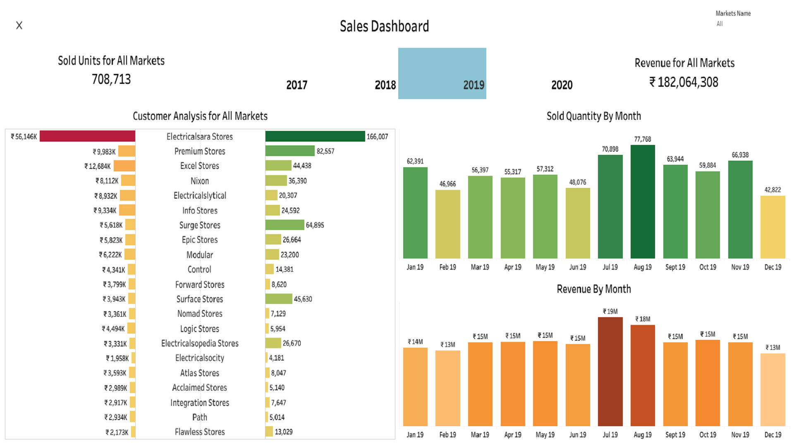

Sales Analysis for Electronic Firm
Description
The Dashboard tells about the sales trend of the Hotel Chain.It helps the hotel mangement for checking Booking status calculating the revneue and various Expenses and various other ratios and parameters related to Hotel Management Industry.
Working
The Data was provide in SQL dump format by codebasic .The SQL dump file was then exported in local MySql server. The dashboard was created on tableau public and there is no option in the public version to connect to SQL database so I exported all the data using python and then uploaded all the CSV files on tableau created the various relations between tables and created the star schema and then create the Dashboard.
Dashboard Features
- Butterfly chart to get the amount sales generated and the amount of products sold by the company from top 21 customers
- Bar Chart to tell the amount of revenue generated by the company through out the months of a certain year.
- Bar Chart to tell the amount of products sold by the company through out the months of certain year
- Filter for year to select a certain year for analysis
- KPIS for tell the total amount of revenue generated and the total amount of quantity sold by the company on applying the various filters.
- Hidden Button Filter to select the for the various markets in which the company operates.